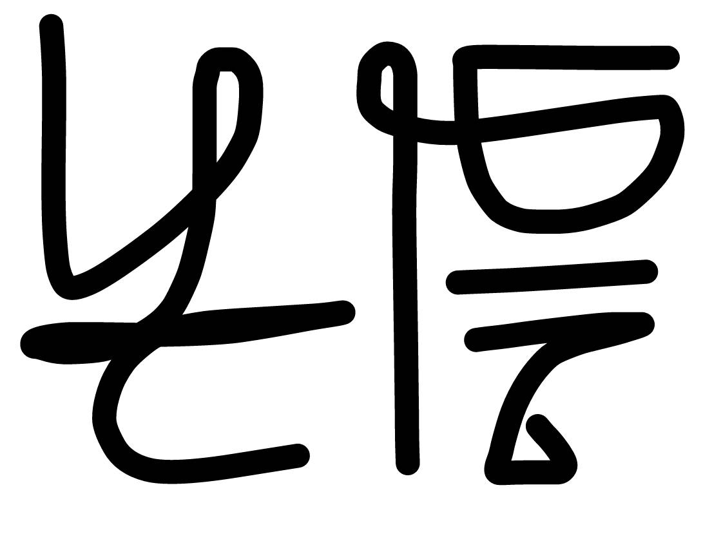
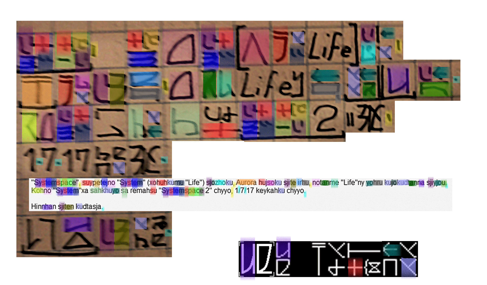
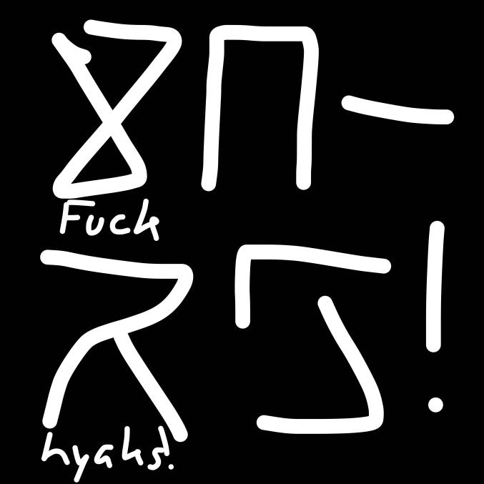
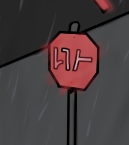

Synapsian Samples
We know that "print" Synapsian is called kodaban, while handwritten synapsian is called iriman. The following samples will be tagged accordingly.
"Nanekyan" (kodaban), meaning "human appreciation". "Nane" means "human", "ekyan" means "to appreciate".
"Nanekyan" in iriman.
The Synapsian sample (kodaban) above already has its pronunciation included, but will be recorded here for clarity:
"Systemspace" suypetejno "System" (xohuhkumu "Life") sjozhoku, Aurora hujsoku sjite irhu, notanme "Life" ny yohru kujokudtanna sjiyou. Kohno "System" xa sahkhuyo sa remahsu "Systemspace 2" chyyo, 1/7/17 keykahku chyyo.
Hinnhan sjiten kudtasja.
This translates to "Systemspace, the construct in which all Systems (including your current System "Life") belong has run out of Aurora due to extreme use by the System "Life". This System will be removed during the upgrade to Systemspace 2.0, planned for the 1st of July 2017 (Life/Earth time). We request everyone to leave this System. This can be done by signing up before the 1st of July 2017 (Life/Earth time)."
As you can see, this sample means "Present day, present time!" and is read "Genhe ha, Genhe tenka!"
"Hyak t'xa!", which basically means "fuck hyakanghen!"
"Hih-ts" probably means "Stop."

"S'kan xo setsjna, nokra xo jomna", which translates to "Unlink the world, unlock the rest."